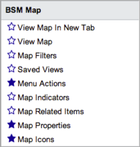

Business Service Management Map - Eureka
Contents
1 Overview
A ServiceNow business service is work or goods that are supported by an IT infrastructure. For example, delivering email service to an employee can require services such as email servers, web servers, and the work to configure the user's account. A business service management (BSM) map graphically displays the configuration items (CI) that support a business service and the relationships between the configuration items.
| |
Note: If you are using a version of the ServiceNow platform other than Eureka, see the related documentation in Business Service Management Map. |
2 Internet Browsers Requirements and Limitations
Microsoft Internet Explorer has these limitations and requirements when used with ServiceNow BSM maps:
- To access the BSM map using Internet Explorer 7 and 8, you must install Adobe Flash Player 10.1 or higher.
- You cannot export images from the map with Internet Explorer 7.
- Map view images saved in a browser other than Internet Explorer 8 might not display properly in Internet Explorer 8.
- Internet Explorer 7 can only display the version numbers of saved views and not the images.
To use Firefox ESR - the latest version is required.
3 Business Service Maps
Many of the relationships in a BSM map are created through the discovery process. You can also create, define, and delete CI relationships in the map. You can display the map from different perspectives and open specific records that relate to configuration items. The system refreshes the map automatically to reflect changes to the CMDB.
Nodes on the map may represent one configuration item or a collection of configuration items grouped into a single icon.
The following figure displays an overview of the actions that are available for BSM maps.
{kind=link}
4 Roles
Users with the itil and ecmdb_admin roles can view BSM maps and perform all actions in the map, which includes accessing the map views and filters they have saved, both from the lists in the map and from the Map Filters module.
5 Menus and Modules
The BSM Map application menu contains the following modules.
|  |
|
{kind=link}
6 Enhancements
6.1 Eureka
- The BSM Map application has been significantly enhanced and is active in all instances. When you click the BSM map icon on CI records or on task records that identify a CI, the enhanced Business Service Management Map opens.